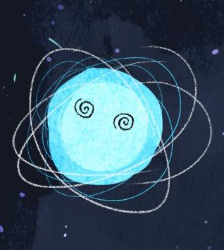

Olá, Mundo!

Meu nome é Paulo Cezar de Carvalho Albuquerque e no momento moro no Rio Grande do Norte - BR, onde sou estudante de Informática para Internet pelo Instituto Federal de Educação, Ciência e Tecnologia.
Portifólio
Aqui estão alguns projetos desenvolvidos por mim.